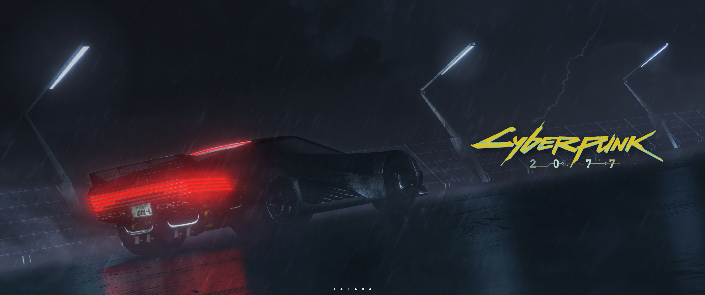
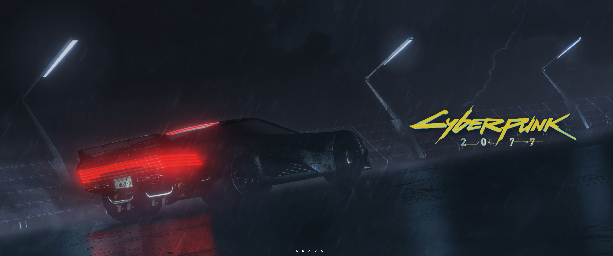

____ ____ __
/ __/_____ / __ \ _____ / /_
/ /_ / ___// / / // ___// __/
/ __// / / /_/ /(__ )/ /_
/_/ /_/ \____//____/ \__/
Welcome, chum!
Glad you're here! Check out my online place and find cool stuff!
Want some fancy effects? Click HERE to turn them on.
Some things you might be interested in:
My Webpage!
Written on 04.12.2024
This is my personal webpage with all my projects, images, news and more! Be sure to take a look around.
[!] Regarding the design, I was inspired by RichardApps. Wanna contribute to his webpage? Check it out: richardapps-web
[🔒] For information on how I handle your traffic data, please check my Privacy Policy.
Don't forget to check out the different themes for the website! They are located below this post.
Latest Updates
NOVEMBER 12th, 2024: Added a border for the pictures in the "Pictures" category.
NOVEMBER 6th, 2024: Posted a new blog + fixed the views counter.
NOVEMBER 5th, 2024: Updated the site domain to fr0st.xyz.
OCTOBER 27th, 2024: Redesigned the favorite movies and shows section and added a "Show More" button for the latest updates.
✖ OCTOBER 22nd, 2024: Added view tracking for blog posts. A new privacy policy notice is now displayed on the homepage, and the site uses Litlyx Analytics.
✖ OCTOBER 20th, 2024: [BETA] Launched the blog, featuring updates on my ongoing, past, and future projects.
✖ OCTOBER 17th, 2024: Updated the project Neofetch into Neo-Fastfetch due to repository changes and added a note in the Pictures tab about my wallpapers.
✖ OCTOBER 16th, 2024: Updated project organization: projects are sorted into three categories—Web Development, Linux Tools, and AHK Macros—to enhance user experience.
✖ SEPTEMBER 25th, 2024: Added a new project and changed the order of tabs: About Me is now secondary, and Projects is now third in the navbar.
✖ AUGUST 22nd, 2024: Reworked the entire website.
✖ JULY 14th, 2024: Added a new project to the Projects tab.
PROJECTS
-
Tomato Delivery
Full Stack Food Delivery Website in React JS, MongoDB, Express, Node JS & Stripe.
-
FrostOS
Terminal-Based Operating System in the Browser.
-
TabZ
My first extension for easy tab management and organization.
-
Scanify
A webpage to make a QR Code from text using an API.
-
Echo.FM
A free music player with a variety of songs.
-
PassGenQ
A random password generator with a terminal-inspired design.
-
FrostAI
A frontend AI web design project created in ReactJS for my portfolio. My first React project, though it's not responsive yet.
-
fr0st.xyz
My personal webpage/portfolio with a design inspired by old terminals.
[?] If you spot any bugs or have ideas for new features, let me know! Contributions are welcome! :)
-
fr0st-hyprdots
Aesthetic, dynamic, and minimal dots for Arch hyprland.
-
xremap-tools
A Bash script for persistent custom key bindings on Linux.
-
arch-update
A simple bash script for managing system updates on Arch-based distributions.
-
neo-fastfetch
A custom configuration for Neofetch and Fastfetch to personalize my terminal's appearance.
-
Kiyoko's Macro
AutoHotkey macro for the game Mighty Omega on Roblox.
-
CS2-BHOP
AutoHotkey macro for the game Counter-Strike 2.
-
XPicker
Slim color picker made in AutoHotkey.
-
Autocook
A macro for Mighty Omega that autocooks for you.
-
Speed
A macro for Mighty Omega that helps you fight.
-
AutoRun
A macro for Mighty Omega that allows you to run automatically by pressing the "W" key once.
-
AutoDash
A macro for Mighty Omega that automatically jumps and dashes when you press the "E" button.
PICTURES
Thinking about wallpapers..? If you enjoy these types of pictures, check out my GitHub repo to find all my wallpapers!
Here's a collection of photos I like!


 

Click on one of the pictures to see information about it.
ABOUT ME
Hey there! Thanks for checking out my website! Happy to have you here.
As to me, I'm Frost. I love all things computer-related! I've played around with coding and stuff. Not an expert, but it's fun!
I really enjoy making websites. It’s fun to design and build something that people can use and see online. Whether it’s creating a neat layout or figuring out how to make things work smoothly, I find it really satisfying to see a website come together.
In my free time, I enjoy working on various tech projects. Whether it's creating a small script to automate a task or developing a full-blown web application.
Furthermore, I love listening to music! (Before you ask, I listen to all genres :P) Take a listen here: 🔊
Skills
Some things I learned during my journey:
-> HTML/CSS/JS Obviously used to create this site.
-> Python Useful for a lot of projects. Still in the process of learning it, though.
-> Autohotkey (AHK) A scripting language used for automating the Windows GUI.
-> React A JavaScript library for building user interfaces.
-> Bootstrap A CSS framework directed at responsive, mobile-first front-end web development.
-> Linux An open-source operating system kernel that's popular for its flexibility and security.
-> Bash/Shell Scripting A command-line scripting language used for automating tasks in Unix-like operating systems.
Things I Want to Learn :
-> C/C++ Fast and powerful languages used to build games, software, and high-performance systems.
-> TypeScript A strict syntactical superset of JavaScript, adding static types.
-> More frameworks for web development To enhance my skills in building modern web applications.
-> Go A statically typed programming language designed for simplicity and efficiency.
Favourite Movies/Shows:
| － Pi (1998) - [Movie] |
| － Interstellar - [Movie] |
| － Blade Runner 2049 - [Movie] |
| － Fight Club - [Movie] |
| － Mr. Robot - [Show] |
| － Dune 1∕2 - [Movie] |
| － Fallout - [Show] |
Site Goals
Why did I made this site you may ask?
It's just nice to have a personal space where I can host and show whatever I want, while having full control over it.
Long live the indie-web!
Contact & Social Media
(I mostly prefer Discord for contact!)
Questions, wishes, inquiries, problems, and everything else can go to: